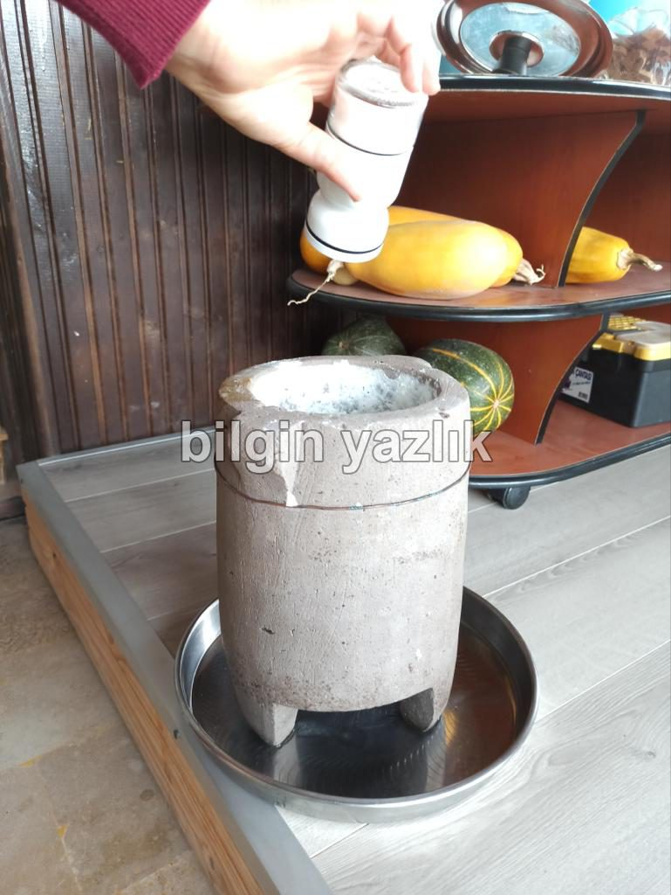
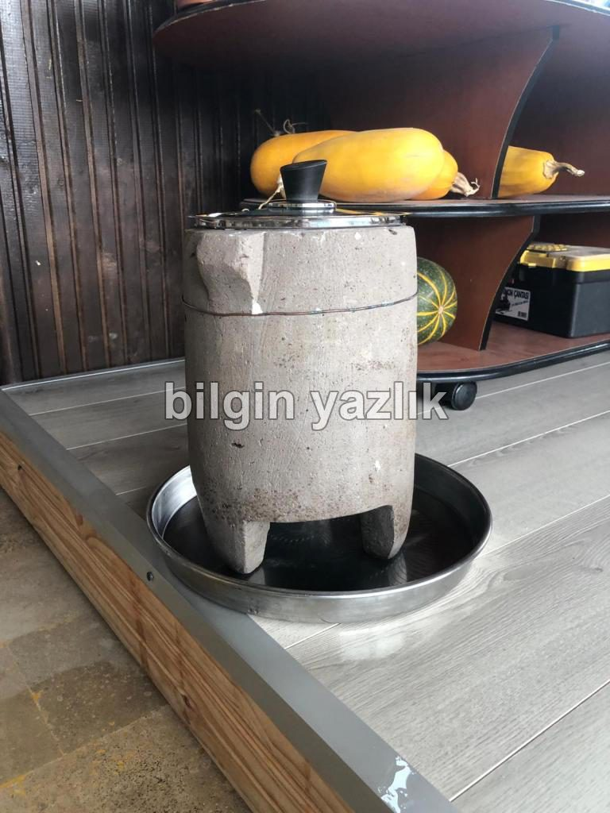
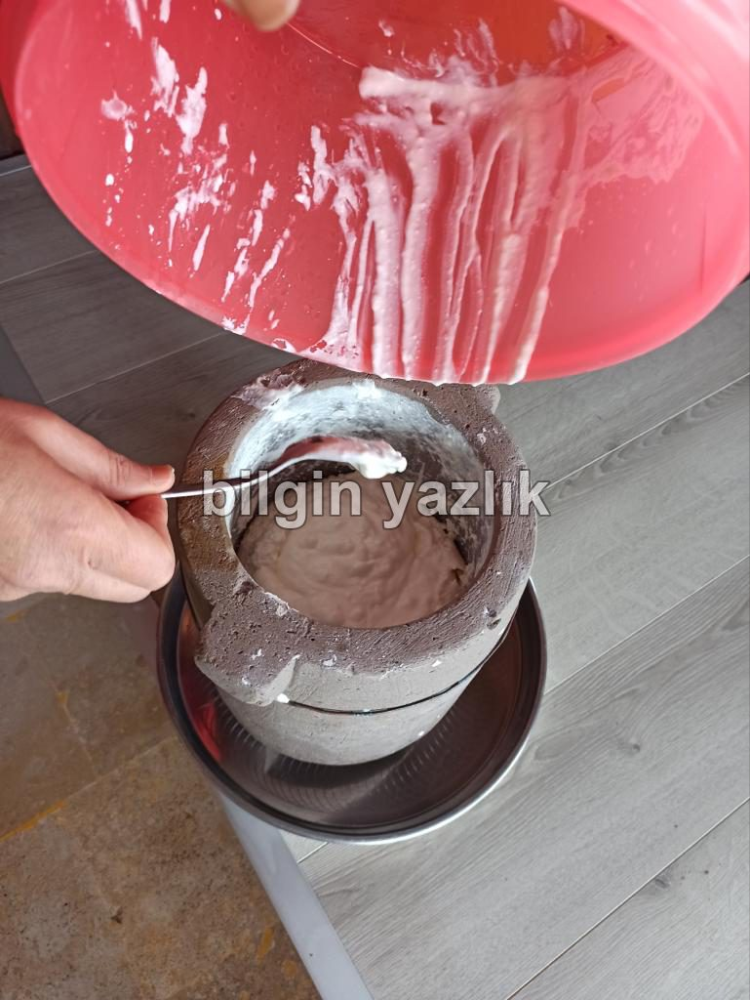
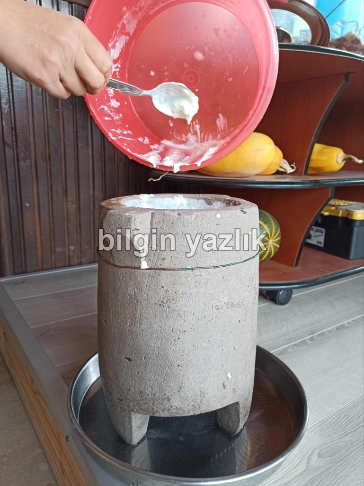
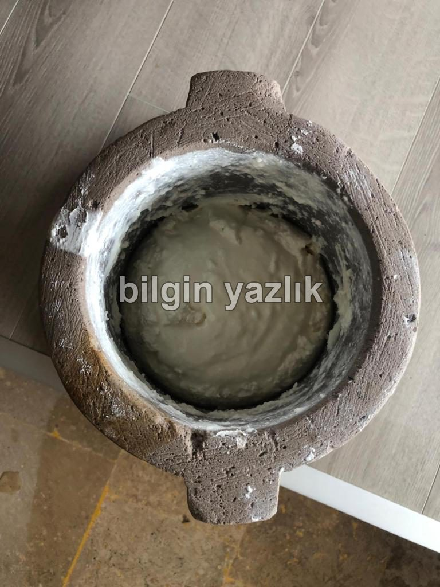
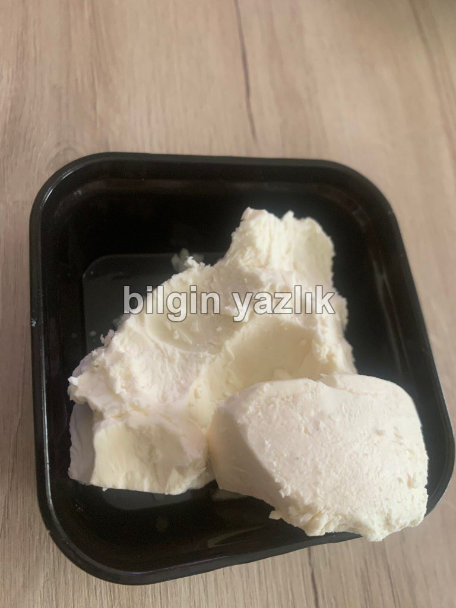

Dorak Yoğurdu
Koramaz Vadisi’nin eşsiz doğal güzellikleri arasında gezerken binlerce yıllık Anadolu gelenekleriyle yaşayan köyler sizi karşılar. Yürüyüş sonrası tatlı yorgunluğunuzu atmak için özellikle Ağırnas’ta ve Turan’da yapılan Dorak Yoğurdundan yemeye davet ediyorum sizleri.
Dorak Yoğurdu, Dorak olarak adlandırılan, bölgedeki volkanik, gözenekli ve görece hafif olan bir kayadan oyulan oyma taş kaplarda yapılır. Bugün bilinen son bir Dorak ustası kaldı o da Ağırnas’ta yaşıyor ve hala Dorak üretiyor.
Dorak Yoğurdu aslında bildiğimiz yoğurdun suyunun süzülmüş hali. Mayaladığınız ve yemeye hazır hale gelen yoğurdu Dorak’ın içine dolduruyorsunuz, üstüne bozulmasın diye bir miktar tuz ekliyorsunuz, yoğurt birkaç gün o taş kabın içinde bekledikçe suyu gözeneklerden süzülür ve geriye yoğun kıvamlı bir yoğurt kalır. Bu işlem Dorak doluncaya kadar arka arkaya tekrarlanır. Yani üst üste yoğurt eklemek mümkündür. Dorak Yoğurdu, özellikle buzdolabının bulunmadığı sıcak yaylalarda yoğurt bozulmasın diye bulunmuş bir yoğurt saklama metodudur.
Dorak Yoğurdu, suyu iyice süzüldükten sonra peynir kıvamına gelir ve sulandırılarak ayranı da yapılabilir. Dorak Yoğurdundan yapılan ayranı içmelere doyamazsınız.
Anadolu’nun zorlu yaşam koşullarında insanoğlu hayatını sürdürebilmek için akıl dolu çözümler üretmiştir. Dorak da bu çözümlerden en lezzetlisidir.
Koramaz Vadisi’ni ziyaret eden tüm ziyaretçileri Dorak’ın ve Yoğurdunun izini takip etmeye davet ediyorum.






Fotoğraf: Osman Özsoy, Ağırnas
Bu yazı taliyol arşivinden taşınmıştır. · özgün kayıt